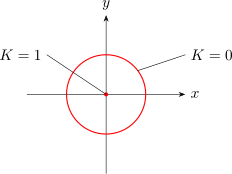
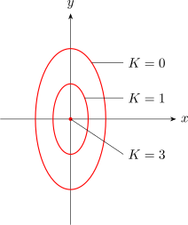
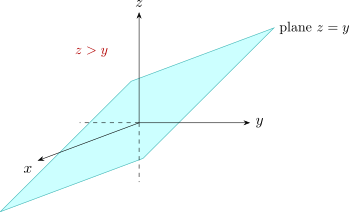

1.1 Level Curves
A second way to picture a function of two variables, often more useful than its graph, is a contour map: the curves in the \(xy\)-plane on which \(f\) is constant.
Definition 1.1.1. The level curve of \(f\) at height \(k\) is the set \[\{(x,y)\in D : f(x,y) = k\},\] for each \(k\) in the range of \(f\). For a function of three variables the same definition gives a level surface \(f(x,y,z) = k\).
As a point moves along a level curve the value of \(f\) does not change. Drawing the level curves for equally spaced values of \(k\) and imagining each lifted to height \(k\) recovers the surface, exactly as contour lines on a map describe a landscape; where the curves crowd together the surface is steep, and where they spread out it is nearly flat.
For the hemisphere \(z = \sqrt {1 - x^2 - y^2}\), setting \(z = k\) gives \[k = \sqrt {1 - x^2 - y^2} \iff x^2 + y^2 = 1 - k^2 ,\qquad 0\leq k\leq 1 .\] So the level curves are circles centred at the origin: the unit circle at height \(k = 0\), shrinking to the single point \((0,0)\) at height \(k = 1\). A value such as \(k = 2\) gives \(x^2 + y^2 = -3\), which has no solutions, as it must: \(2\) is not in the range of \(f\).

Example 1.1.2. Let \(g(x,y) = \sqrt {9 - x^2 - 2y^2}\).
- 1.
- Find the domain and range of \(g\).
- 2.
- Sketch the level curves of \(g\).
Solution.
- 1.
- The square root requires \(9 - x^2 - 2y^2\geq 0\), so \[D = \{(x,y) \mid x^2 + 2y^2 \leq 9\},\] the region inside and on the ellipse with semi-axes \(3\) along the \(x\)-axis and \(\frac {3}{\sqrt 2}\) along the \(y\)-axis. On \(D\) the quantity \(9 - x^2 - 2y^2\) takes every value from \(0\) (on the ellipse) to \(9\) (at the origin), so the range is \([0,3]\).
- 2.
- Setting \(g = k\) gives \[x^2 + 2y^2 = 9 - k^2 ,\qquad 0\leq k\leq 3,\] a family of ellipses with the same shape: \(k = 0\) gives the boundary \(x^2 + 2y^2 = 9\), \(k = 1\) gives \(x^2 + 2y^2 = 8\), \(k = 2\)
gives \(x^2 + 2y^2 = 5\), and \(k = 3\) gives the single point \((0,0)\).

Solution. The logarithm requires \(z - y > 0\), and the second term is defined everywhere, so \[D = \{(x,y,z) \mid z > y\},\] the open half-space lying above the plane \(z = y\); \(x\) is unrestricted. The range is all of \(\mathbb {R}\): already on the line \(x = 0\), \(y = 0\), \(z>0\) the function is \(\ln z\), which takes every real value.

Questions on this section
Stuck on something here? Ask below and it stays attached to this topic.